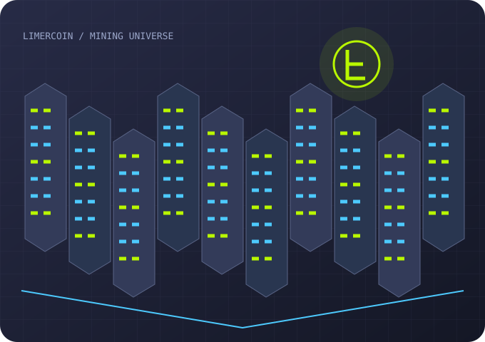
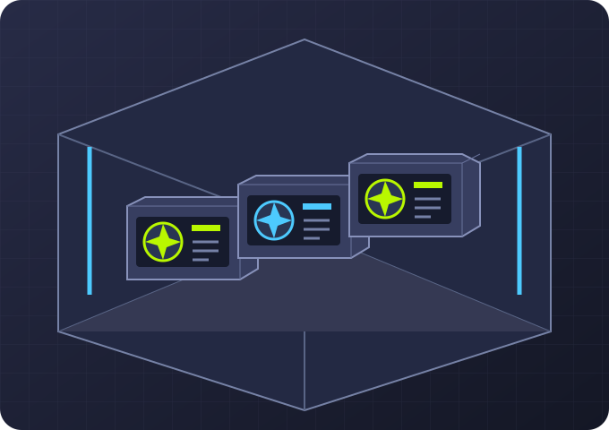
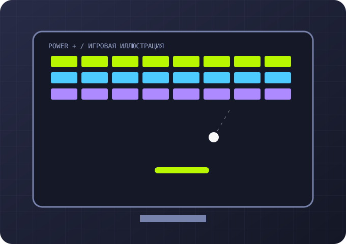
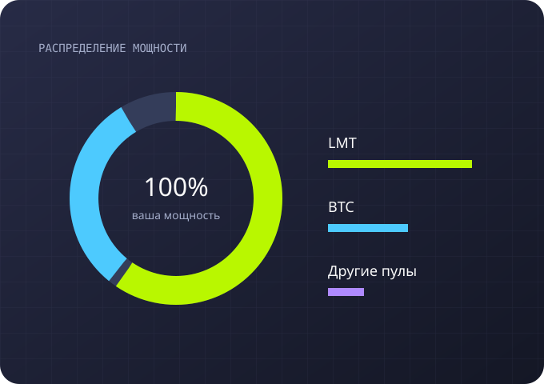
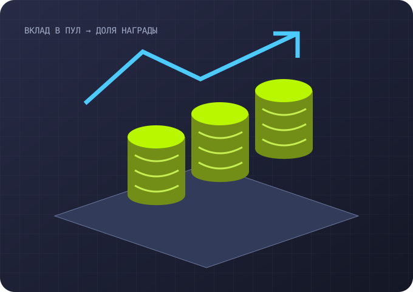
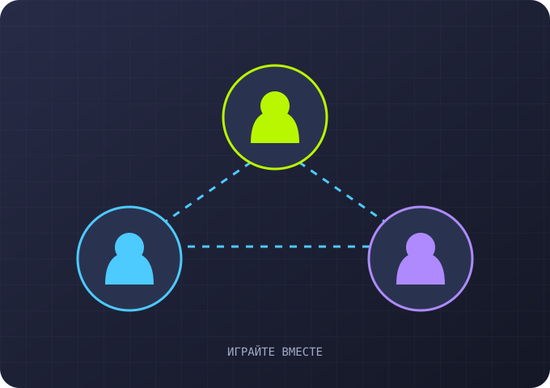

Mining Blocks
Развитие без денежных пополнений
Стройте ферму за заработанное в игре: выполняйте задания, крафтите майнеры и накапливайте бонусы. Пополнить баланс реальными деньгами здесь нельзя.
Гайд Mining BlocksДОБРО ПОЖАЛОВАТЬ В
Создавайте мощность. Играйте.
Развивайте свою майнинг-империю.

ВАША СТРАТЕГИЯ — ВАШ ПРОГРЕСС
Limercoin объединяет виртуальное оборудование, мини-игры и управление мощностью. Этот гайд поможет разобраться в основных механиках перед переходом в игру.
Начать знакомство
01 / ВАША БАЗА
Начните со своей комнаты: размещайте стойки, добавляйте майнеры и выстраивайте удобную конфигурацию. Оборудование формирует постоянную часть игровой мощности.
Продумайте размещение: майнерам нужны свободные места в стойках.
Открыть пространствоВиртуальная комната — основа вашей конфигурации. Сначала оцените доступное место, затем подбирайте совместимые стойки и оборудование.
02 / ОБОРУДОВАНИЕ
На игровом рынке представлены майнеры с разными характеристиками: мощностью, размером, редкостью и принадлежностью к коллекции. Сравнивайте их перед выбором. При крафте получается майнер первого уровня. Для повышения уровня откройте Merge Center: рецепт объединяет два подходящих майнера и требует детали и игровую валюту. В каталоге есть цепочки улучшений до L6; перед слиянием проверьте требования и предварительный результат.
Стойки нужны для установки майнеров. Учитывайте их вместимость и доступное место.
Перейти на рынокСравнивайте мощность с занимаемым местом. Редкость и коллекция описывают предмет, но сами по себе не заменяют проверку его характеристик.

03 / МИНИ-ИГРЫ
Мини-игры дают дополнительную мощность на ограниченное время. Она прибавляется к мощности оборудования и помогает увеличить ваш вклад в выбранные пулы.
Следите за сроком действия бонуса: игровая мощность со временем исчезает.
Открыть игрыБонусная мощность ограничена по времени. Проверяйте её состояние в своём профиле и учитывайте при планировании распределения.

04 / УПРАВЛЕНИЕ
Выбирайте, какая часть общей мощности направляется в каждый доступный пул криптовалюты. Распределение определяет, в каких наградах вы участвуете.
Иллюстрация показывает принцип распределения. Доступные пулы и условия смотрите в игре.
Настроить мощностьЕсли меняете цели, проверьте распределение заново. Эта страница не подключается к аккаунту и не меняет игровые настройки.

05 / НАГРАДЫ
В каждом пуле объединяется мощность участников. В описанной на сайте механике доля награды зависит от доли вашей мощности в пуле: оборудование и временные бонусы влияют на этот вклад.
Это игровой симулятор. Иллюстрации не являются расчётом дохода; актуальные правила начисления и вывода проверяйте в сервисе.
Перейти в LimercoinДоля в пуле зависит и от мощности других участников. Поэтому одинаковая собственная мощность не означает постоянную величину награды.

06 / ВМЕСТЕ ИНТЕРЕСНЕЕ
В Limercoin предусмотрена реферальная программа. Приглашайте знакомых и изучайте доступные бонусы — их условия публикуются в самом сервисе.
Кнопки этого гайда содержат реферальный идентификатор ryxpgvt3.
Изучить в игреРеферальная ссылка переводит на официальный сайт. Регистрация, условия программы и доступные награды находятся на стороне Limercoin.
СЛЕДУЮЩИЙ ШАГ — ЗА ВАМИ
Enter the Universe